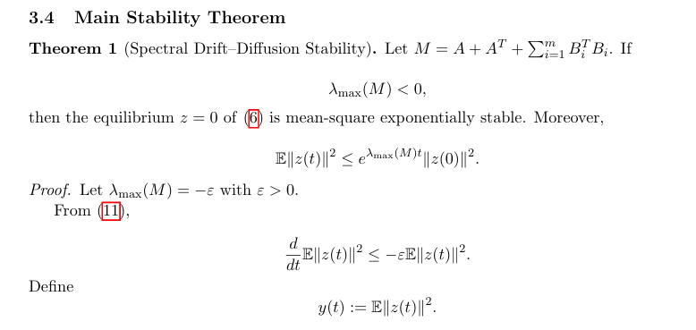
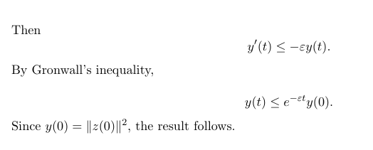
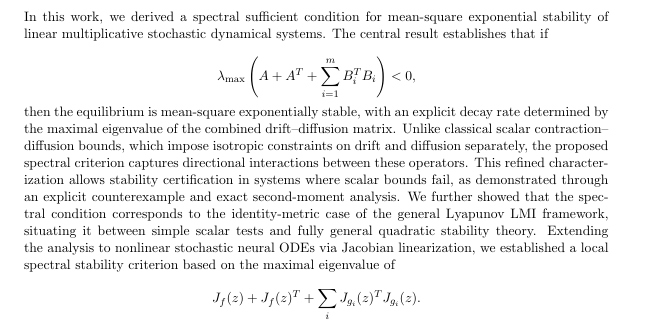

continuous-time neural dynamical systems and stochastic differential equations are increasingly used to model representation flows, physical systems, biological processes, and uncertainty-aware neural architectures. however, stability analysis under multiplicative stochastic perturbations is often treated using scalar contraction–diffusion inequalities.
while studying classical stochastic stability theory, i observed that many widely cited sufficient conditions bound drift and diffusion isotropically. that is, contraction strength and diffusion magnitude are compared as scalar quantities, without accounting for directional interaction between the two operators.
this raised a fundamental question:
can stability of multiplicative stochastic systems be characterized directly through the spectral structure of the combined drift–diffusion operator, rather than through separate scalar bounds?
the objective of this work was to derive a closed-form, computationally interpretable spectral sufficient condition for mean-square exponential stability that refines classical contraction–diffusion inequalities.
consider the linear multiplicative stochastic differential equation
dz(t) = A z(t) dt + ∑ Bᵢ z(t) dWᵢ(t)
where A and Bᵢ are real matrices and Wᵢ(t) are independent Brownian motions.
the equilibrium at z = 0 is said to be mean-square exponentially stable if
E‖z(t)‖² ≤ C e^{-βt} ‖z(0)‖²
for some constants C > 0 and β > 0.
classical analysis uses quadratic lyapunov functions and matrix inequalities of the form:
AᵀP + P A + ∑ Bᵢᵀ P Bᵢ ≺ 0
which requires solving a semidefinite program. the goal was to derive a condition that:
defining the symmetric drift–diffusion matrix
M = A + Aᵀ + ∑ Bᵢᵀ Bᵢ
i proved the following result:

if the maximal eigenvalue satisfies
λₘₐₓ(M) < 0
then the equilibrium z = 0 is mean-square exponentially stable, and the decay rate of the second moment is governed explicitly by λₘₐₓ(M).

the proof follows from:
the resulting bound is sharp in the sense that λₘₐₓ(M) directly controls the exponential growth rate of the second moment.
i formally established that the classical scalar contraction condition implies the spectral condition, but the converse does not hold.
to demonstrate strict improvement, i constructed an explicit two-dimensional counterexample in which:
this example highlights the geometric advantage of the spectral test: diffusion acting in strongly contracting directions does not necessarily destabilize the system.
the scalar condition cannot detect this anisotropic interaction, whereas the spectral condition directly evaluates the combined operator eigenstructure.
the framework was extended to nonlinear stochastic systems of the form
dz = f(z) dt + ∑ gᵢ(z) dWᵢ(t)
using jacobian linearization around equilibrium.
defining
M(z) = Jf(z) + Jf(z)ᵀ + ∑ Jgᵢ(z)ᵀ Jgᵢ(z)
local mean-square exponential stability holds if
sup λₘₐₓ(M(z)) < 0
this yields a practical spectral stability test for stochastic neural dynamical systems, connecting jacobian eigenstructure directly to second-moment decay behavior.
the results suggest principled design guidelines:
in neural ode training pipelines, jacobians are already computed during backpropagation, making spectral stability penalties computationally feasible.
this work reflects my interest in stochastic stability theory, spectral operator analysis, and mathematically grounded neural system design. it represents an attempt to bridge control-theoretic reasoning with modern continuous-time machine learning models.
